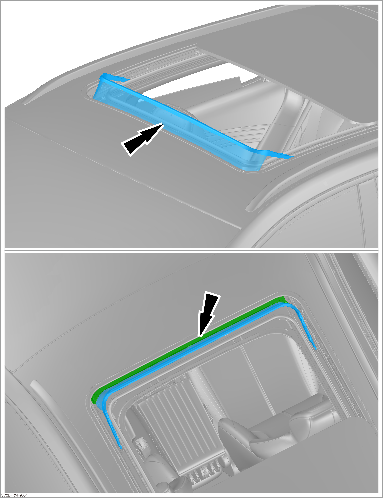
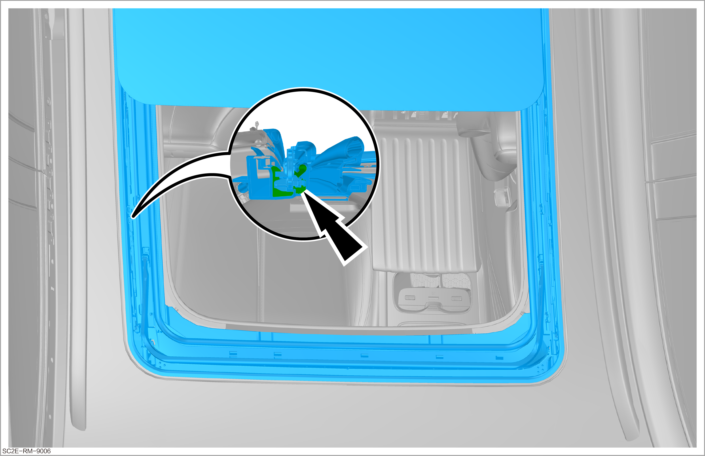
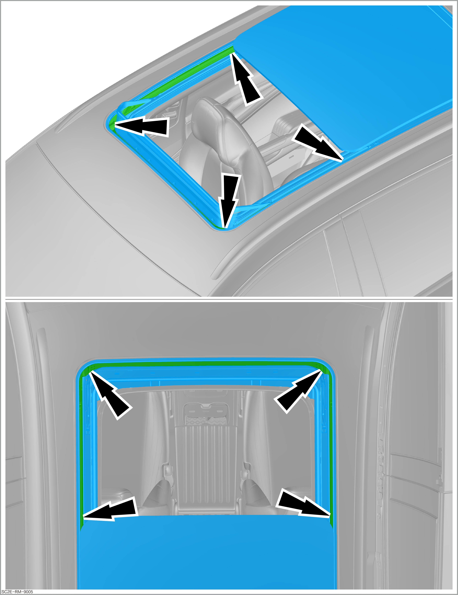

Inspection and Cleaning of Sunroof
Cleaning of deflector
-
Check that the deflector is free of dirt.
-
In particular, check that the deflector lower rain gutter is free of dirt. In case of obvious dust accumulation or blockage in the drain hole, please check that the drainage is smooth after cleaning.
-
Remove accumulated dust and dirt with a vacuum cleaner.
Reminder
-
Remove insects and dust from the screen and deflector with sponges and detergents.
-
Ensure that dust and dirt are prevented from entering the vehicle during cleaning.
Caution
-
Select suitable detergents to avoid corrosion of components.
-
Do not use insect remover or other detergents sold in the market, as they may cause damage to components and/or paint.
-
Use an appropriate nozzle on the deflector screen to avoid damage to the screen.
Remove insects/dirt and dust that have fallen on the screen and deflector with a vacuum cleaner and nozzle.
-
Inspection of sunroof function, cleaning of slide rail, and grease application
-
Check that the sunroof system is free from damage.
-
Check the functions of sunroof system. The sunroof and sunshade shall be able to open and close normally.
-
Clean and lubricate slide rails
-
Open the sunroof to remove large dirt particles.
-
Clean the sunroof slide rails underneath the external sealing strip.
-
Apply a thin layer of solid grease to the slide rails of the whole guide rail.
-
After lubrication, open and close the sunroof once to remove excess grease.
ReminderBe careful not to contaminate other components.
-
-
Obtain a new work order for repair or replacement.
Determined faults must be eliminated.
Inspection of sunroof drain pipe for sealing performance and blockage
-
When checking the rear drain pipe, park the vehicle on an uphill road so that water can flow smoothly into the rear drain pipe.
-
When injecting water into the four corners of the sunroof frame drain channel, be careful not to splash water in the vehicle and onto the inner side of the sunroof, and do not inject a large amount of water to prevent water from overflowing the sunroof drain channel and flowing into the vehicle and onto the inner side of the sunroof.
-
Check the drain pipe.
-
Check the front drain pipe.
-
Park the vehicle on a level ground and open the sunroof.
-
Fill a container of about 500 ml (such as mineral water bottle) with water, and slowly inject about 300 ml of water at the front left and front right corners of the sunroof drain tank.
-
Observe the water flow, and it shall flow out slowly and smoothly through the drain pipe.
-
-
Check the rear drain pipe.
-
Park the vehicle on an uphill road and open the sunroof.
-
Fill a container of about 500 ml (such as mineral water bottle) with water, and slowly inject about 300 ml of water near the rear left and rear right corners of the sunroof drain tank.
-
Observe the water flow, and it shall flow out slowly and smoothly through the drain pipe.
-
If the water can normally flow out through the sunroof drain pipe and there is no accumulated water in the drain channel, it indicates good sealing performance and no blockage of the sunroof drain pipe.
ReminderIf a large amount of water is filled, there will be water flowing to the ground near the four hubcap panels of the vehicle.
-
-
Obtain a new work order for repair or replacement.
Maintenance measures
If there is no water flowing out of a particular sunroof drain pipe, or if the flow from a particular pipe is small (this can be confirmed by comparing the flow rates of the left and right drain pipes in the front or back),
-
the drain pipe needs to be cleaned.
If no water flows out after cleaning,
-
it is necessary to remove the roof assembly to observe if there is any disconnection or detachment between the drain pipe and the sunroof water outlet.
If the drain pipe is disconnected or detached, reconnect the drain pipe and recheck it for sealing performance and blockage.
After inspection, reassemble in the reverse order of removal.